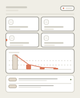
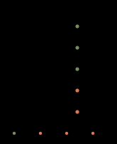
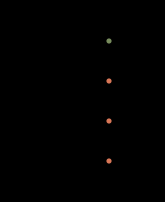

Effective-SVG catalog idiom · declarative CSS @keyframes · no JS · sanitized-source metrics

last_run.json.


package.json, npm in Python shell fails.All four artifacts are self-contained animated SVGs (pure CSS, play in <img>). Counts: 36 issues · 23 success · 8 error · 3 stuck-in-retry · 2 school-failed · 11 retry attempts · 63.9% pass · avg 58.8 (as of 2026-08-18). Source subject to scripts/sanitize_data.py — no PII.